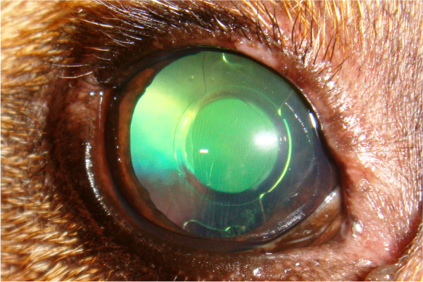
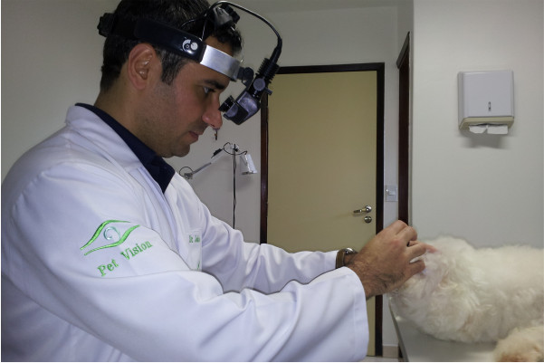
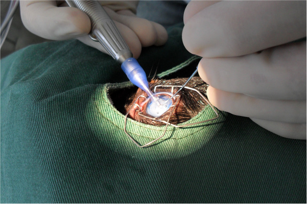
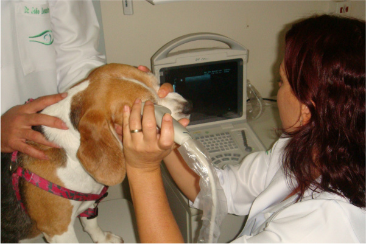

👁️
Consulta Especializada
Avaliação minuciosa das estruturas oculares
Esse site foi uma demonstração da Generation IA Tech. Fale com a gente pra ativar a versão definitiva, com domínio próprio.
Falar no WhatsAppOftalmologia veterinária em Botucatu com a Dra. Guadalupe Sereno — Mestre e Doutora em Oftalmologia Veterinária pela FMVZ-UNESP, atuando desde 2008 em cirurgia de catarata, glaucoma e doenças da córnea.

Da consulta especializada às microcirurgias, com os mesmos exames e equipamentos da clínica de referência em oftalmologia veterinária.

Avaliação minuciosa das estruturas oculares

Facoemulsificação com lente intraocular
Tonometria (Tonopen®)
Oftalmoscopia indireta
Cirurgia de pálpebras e glândulas lacrimais

Procedimentos de alta precisão
Avaliação minuciosa das estruturas oculares
Facoemulsificação com lente intraocular

Avaliação anatômica das estruturas internas

Avaliação do funcionamento da retina
Iris-Vet® — avaliação do sistema visual
Registro fotográfico especializado

Avaliação da produção lacrimal
Tratamento clínico e cirúrgico
Avaliação anatômica das estruturas internas
Avaliação do funcionamento da retina
Formação acadêmica de peso e tecnologia dedicada exclusivamente à oftalmologia veterinária.
Formação específica em Oftalmologia Veterinária, na própria Botucatu.
Colégio Brasileiro e Colégio Latino-americano de Oftalmologistas Veterinários.
Facoemulsificação, ultrassom ocular, eletrorretinografia e mais.
Quase duas décadas especializados só em oftalmologia veterinária.
Ambiente acolhedor, identificado como negócio de empreendedoras.
26 avaliações reais de tutores em Botucatu.
O que os tutores dizem sobre o atendimento da Pet Vision Botucatu.
"Excelentes profissionais!! Cuidaram da minha Shari com muito carinho e atenção. Indico de olhos fechados!!" Laura Medeiros · avaliação no Google
"Excelente profissional, muito atenciosa e carinhosa. Meu pet estava com ceratite crônica intensa. Obrigada Dra Guadalupe, ele está 100%." — Giseli Branco, avaliação no Google
A Dra. María Guadalupe Sereno (CRMV-SP 43138) é graduada em Medicina Veterinária pela Universidad del Salvador (Argentina), com Mestrado e Doutorado em Cirurgia Veterinária — área de Oftalmologia — pela FMVZ-UNESP de Botucatu. É Especialista em Oftalmologia Veterinária pelo CFMV, membro do Colégio Brasileiro (CBOV) e do Colégio Latino-americano (CLOVE) de Oftalmologistas Veterinários, atuando com cirurgia de catarata e microcirurgias desde 2008.
R. Brás de Assis, 330 — Vila Casa Branca, Botucatu-SP, 18608-333
(11) 94147-0768
5,0 de 5 (26 avaliações)